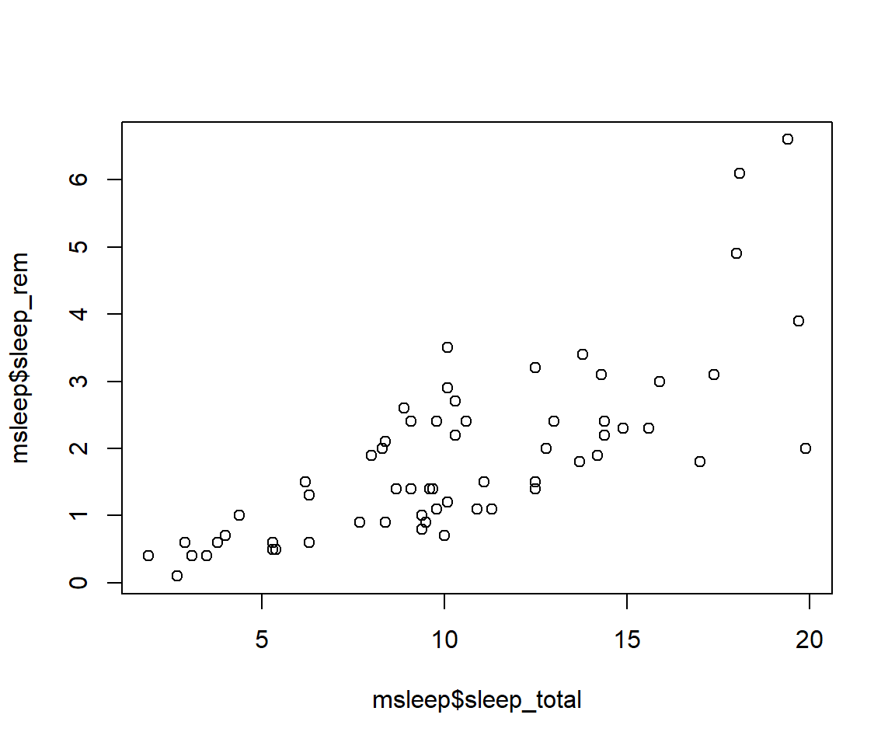
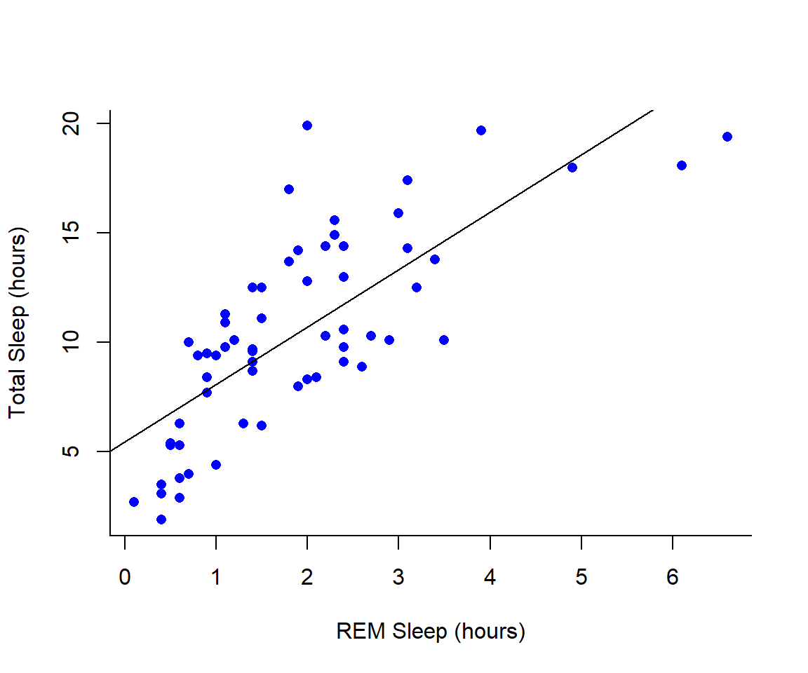
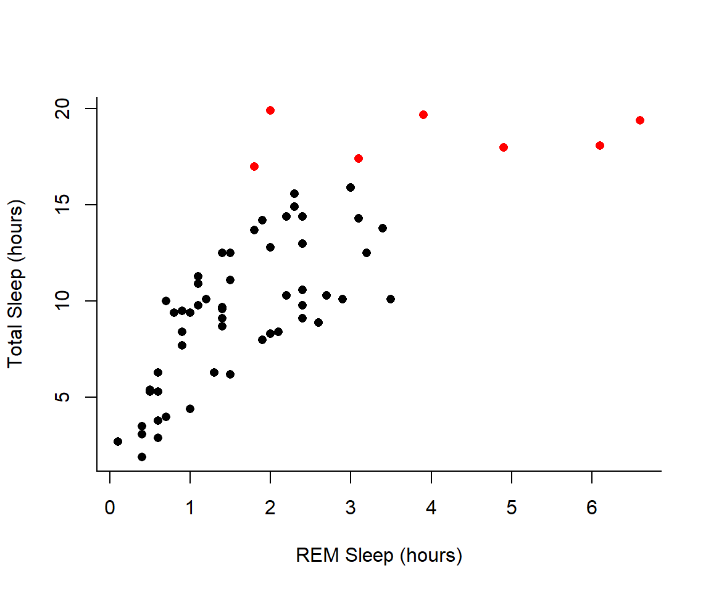
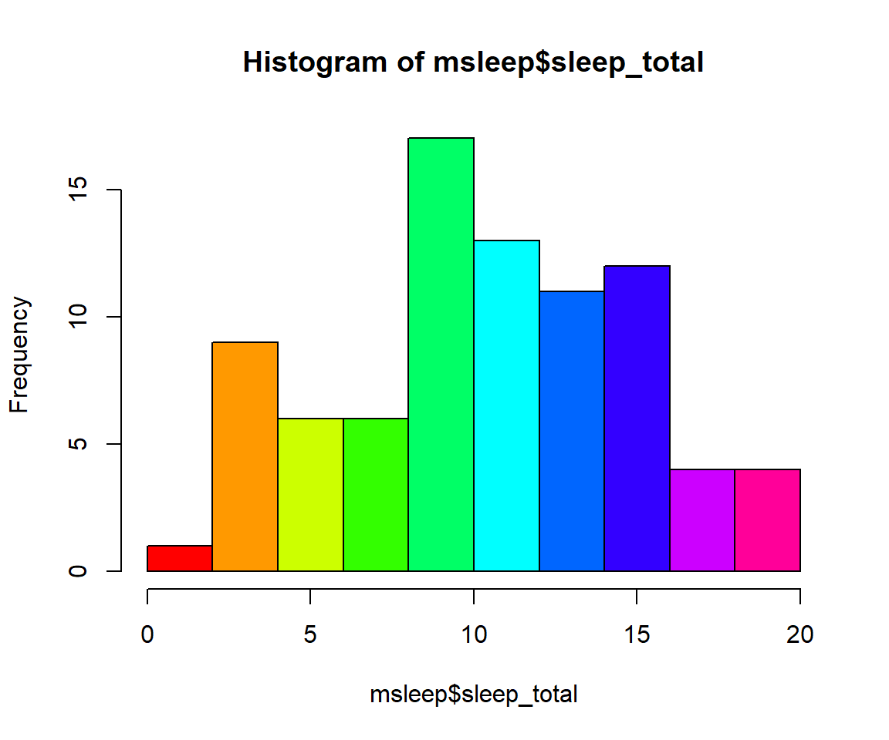
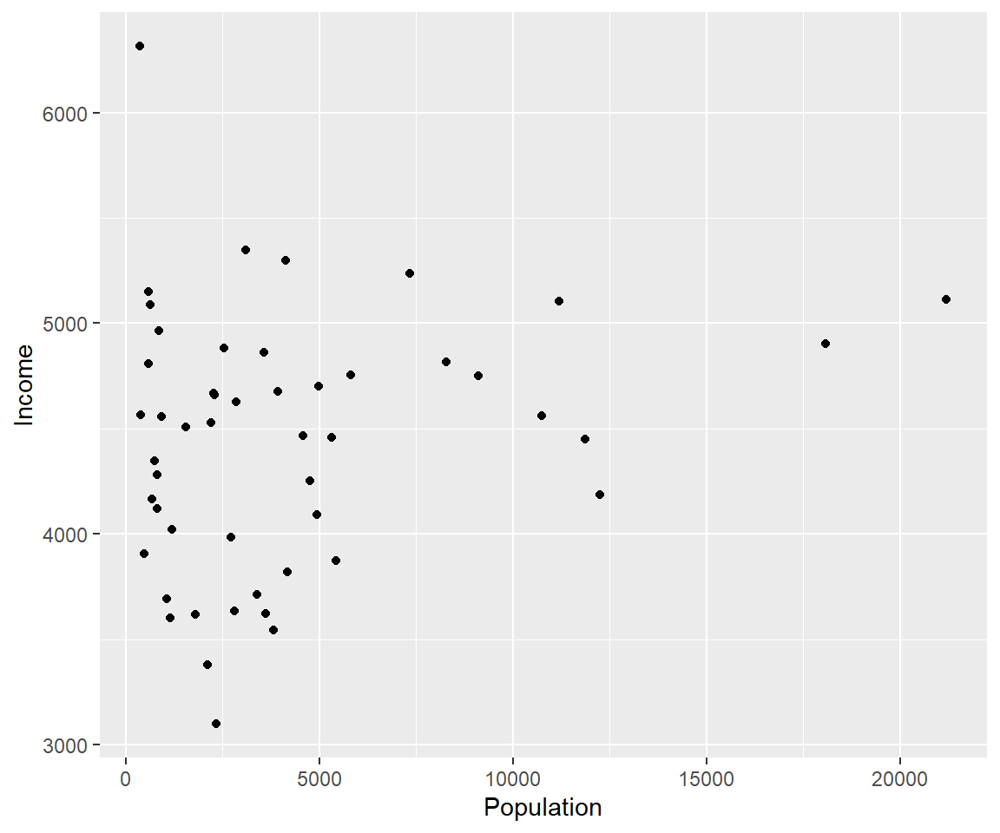
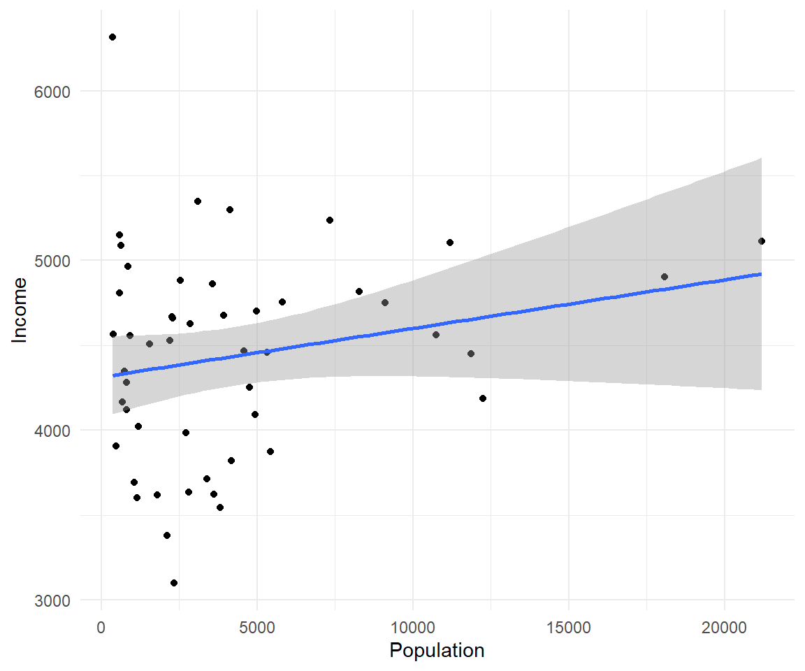
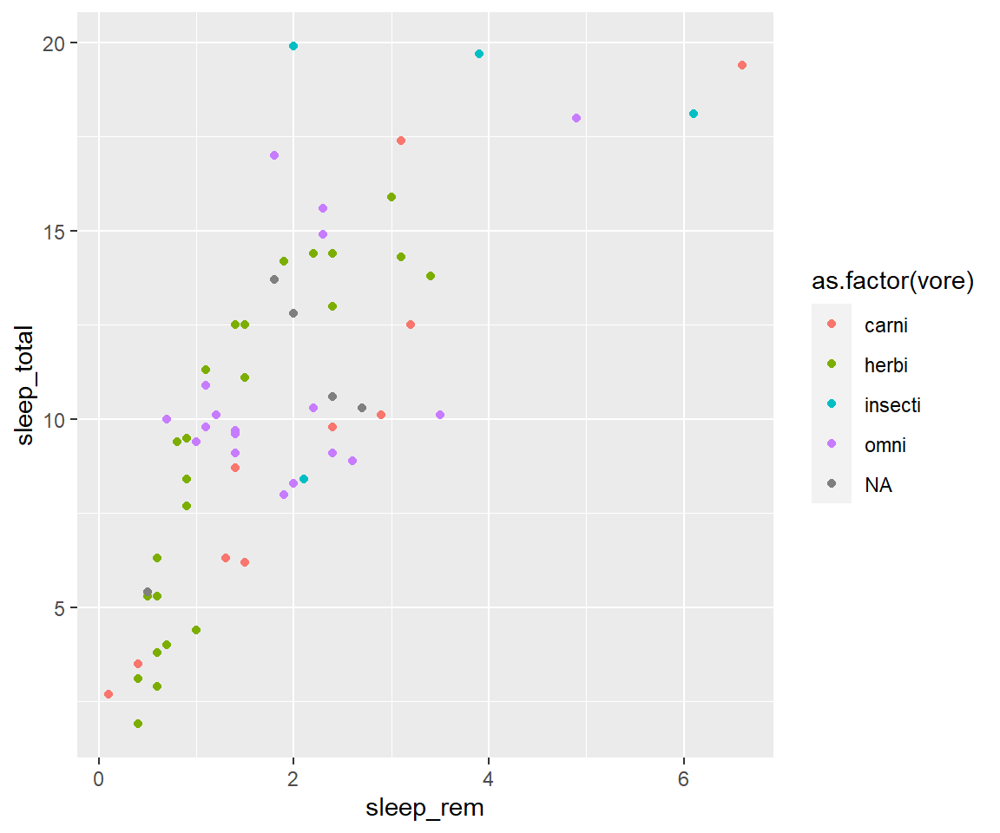
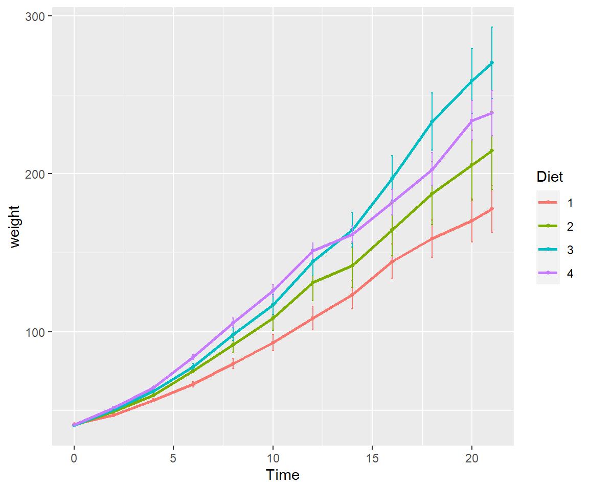

7 Week 6- R Continued
R icon
We’re again drawing some of this material from the STEMinist_R materials which can be found here
7.1 2.1 Plotting
These lessons are evenly divided between live coding and performed by the instructor and exercises performed by the students in class with instructor support.
This class will take place with students typing directly into an R script for the exercises all of which can be found in the Week 4 file here
You can download just the R files for just this week via wget with the following link
wget https://raw.githubusercontent.com/BayLab/MarineGenomicsData/main/week6_semester.tar.gzthis is a compressed file which can be uncompressed via:
tar -xzvf week6_semester.tar.gz- A few useful commands that we will cover include:
- points()
- lines()
- abline()
- hist()
- boxplot()
- plot()
- A few useful arguments within plot(): main, xlab, ylab, col, pch, cex
7.2 Scatterplots
Within our msleep dataframe let’s plot sleep_total by bodywt (bodyweight)
library(ggplot2)
data(msleep)
plot(msleep$sleep_total,msleep$sleep_rem)
# or plot response variable as a function "~" of the predictor variableplot(msleep$sleep_total~msleep$sleep_rem) #you'll notice this swaps the x and y axis7.3 Customizing your plot
- There are several different arguments within plotting functions that can be used to customize your plot.
colchanges colorpchchanges point charactercexchanges sizetypechanges type (“l” = line, “p” = points, “b” = both)ltychanges line typebtychanges (or removes) the border around the plot (“n” = no box, “7” = top + right, “L” = bottom+left, “C” top+left+bottom, “U” = left+bottom+right) You can view different point characters with?pchThere are many color options in R. For some general colors you can write the name (blue, red, green, etc). There are apparently 657 named colors in R (including “slateblue3, and peachpuff4) but you can also use the color hexidecimal code for a given color. There are several comprehensives guides for colors in R online and one of which can be found (here)[https://www.nceas.ucsb.edu/sites/default/files/2020-04/colorPaletteCheatsheet.pdf]
Let’s remake the total_sleep against sleep_rem plot and add-in some modifiers
#Choose a pch and make the color blue and give it a bottom+left border
plot(msleep$sleep_total~msleep$sleep_rem, pch = 16, col="blue", bty="L")We can change the axes and title labels using “xlab”, “ylab”, and “main” arguments. Let’s add labels to our plot.
#Choose a pch and make the color blue and give it a bottom+left border
plot(msleep$sleep_total~msleep$sleep_rem, pch = 16, col="blue", bty="L", xlab="REM Sleep (hours)", ylab= "Total Sleep (hours)") 
You may want to find out which points are on a plot. You can use identify() in place of plot() to identify specific points within your plot. This function prints out the row numbers for the points that you selected.
We can also add lines to an existing plot with ablines(). Let’s add a line fit from a linear model to our plot.
#first make a plot
plot(msleep$sleep_total~msleep$sleep_rem, pch = 16, col="blue", bty="L", xlab="REM Sleep (hours)", ylab= "Total Sleep (hours)")
#then add a line. The function lm runs a linear model on our x, y values.
abline(lm(msleep$sleep_total~msleep$sleep_rem))
You can add a legend to a plot with legend() which needs you to specify the location.
To do this, let’s make a cutoff for our points and color them by points above and below the cutoff. We’ll use our subsetting skills from last week. Feel free to review that section (1.3).
#start by defining points by whether they are greater than sleep_total 16 and storing
#first make a empty column named colors within the msleep dataframe
msleep$colors=NA
#store the colors "red" or "black" in the color column for the rows that satsify the following criteria.
msleep$colors[msleep$sleep_total >= 17] <-"red"
msleep$colors[msleep$sleep_total < 17] <-"black"plot(msleep$sleep_total~msleep$sleep_rem, pch = 16, col=msleep$colors, bty="L", xlab="REM Sleep (hours)", ylab= "Total Sleep (hours)") 
In addition to scatterplots you can make histograms and boxplots in base R. The same parameter options (pch, col, ylab, xlab, etc) apply for these plots as well as scatterplots.
R will automatically plot a barplot if you give to the plot() function a continuous variable and a factor. If you have a vector stored as a character converting it to a factor via as.factor will make a boxplot.
#let's make a histogram of sleep_total and fill it with the color palette rainbow() which needs to know how many colors to use
hist(msleep$sleep_total, col=rainbow(10))
#let's make a boxplot of sleep_total and order making eachone a different color (how would you find out how many unique orders are in msleep?)
#using plot
#plot(msleep$sleep_total~as.factor(msleep$order), col=rainbow(19)) #this is commented out simply to avoid ploting the same plot twice#or boxplot
boxplot(msleep$sleep_total~as.factor(msleep$order), col=rainbow(19)) Another example looking at sleep variation across the different types of consumers (carnivore, herbivore, insectivore and omnivore):
plot(msleep$sleep_total~as.factor(msleep$vore),col=rainbow(4), xlab="REM Sleep (hours)", ylab= "Total Sleep (hours)")7.4 Exercise 2.1
Read in the data using
data(ChickWeight)
# Note: this dataset can also be accessed directly from the ChickWeight package in R
# (see ?ChickWeight)
data("ChickWeight")
- First, explore the data. How many chicks are in the dataset? How many different diets are in the experiment?
Solution
length(unique(ChickWeight$Chick))
#> [1] 50
length(unique(ChickWeight$Diet))
#> [1] 4
- To vizualize the basics of the data, plot weight versus time
Solution
plot(ChickWeight$weight ~ ChickWeight$Time,
xlab = "Time (days)",
ylab = "Weight (gm)")
- Plot a histogram of the weights of the chicks at the final day of the experiments (i.e. only the chicks who made it to the last day)
Solution
par(mfrow = c(1,1))
hist(ChickWeight$weight[ChickWeight$Time == max(ChickWeight$Time)],
xlab = "Weight (gm)",
main = "Weights at final day of experiment",
col = rainbow(10))
- Create a boxplot where the x-axis represents the different diets and the y-axis is the weights of the chicks at the final day of the experiments
Solution
my.new = ChickWeight[ChickWeight$Time == max(ChickWeight$Time), ]
boxplot(weight ~ Diet,
data = my.new,
xlab = "Diet",
ylab = "Weight (gm)",
main = "Final weights given diet type",
col = c("red", "blue", "orange", "green"))Try using the package R Color Brewer to generate color palettes. Go to http://colorbrewer2.org/ to vizualize palettes. You can choose palettes that are colorblind safe, print friendly, etc.
# Install R Color Brewer
#install.packages("RColorBrewer")
library("RColorBrewer")
- Define a color pallete with 10 colors and re-plot the histogram of the weights of the chicks at the final day of the experiments in these colors Note: if histogram has n breaks and n is less than 10, it will just use first n colors. If n is greater than 10, it will reuse colors.
Solution
library(RColorBrewer)
my.colors = brewer.pal(10, "Paired")
hist(ChickWeight$weight[ChickWeight$Time == max(ChickWeight$Time)], xlab = "Weight (gm)",main = "Weights at final day of experiment", col = my.colors)7.5 2.2 plotting with ggplot2
GGPlot is a package that allows you to make a lot of different kinds of plots and has become increasingly popular. There are also many tutorials on how to use ggplot as well as example code that could be modified to fit the data you’re interested in plotting. There is a really helpful cheatsheat (here)[https://www.rstudio.com/wp-content/uploads/2015/03/ggplot2-cheatsheet.pdf] There is a little bit of a learning curve for ggplot as the syntax is structured differently than base R plotting. One thing that remains the same and is even more noticible in ggplot is the iterative process of building a plot, one aspect at a time. Let’s demonstrate what ggplot can do with the states data set
#load in the data
data(state)
states = as.data.frame(state.x77) # convert data to a familiar format - data frame
str(states) # let's take a look at the dataframe
#> 'data.frame': 50 obs. of 8 variables:
#> $ Population: num 3615 365 2212 2110 21198 ...
#> $ Income : num 3624 6315 4530 3378 5114 ...
#> $ Illiteracy: num 2.1 1.5 1.8 1.9 1.1 0.7 1.1 0.9 1.3 2 ...
#> $ Life Exp : num 69 69.3 70.5 70.7 71.7 ...
#> $ Murder : num 15.1 11.3 7.8 10.1 10.3 6.8 3.1 6.2 10.7 13.9 ...
#> $ HS Grad : num 41.3 66.7 58.1 39.9 62.6 63.9 56 54.6 52.6 40.6 ...
#> $ Frost : num 20 152 15 65 20 166 139 103 11 60 ...
#> $ Area : num 50708 566432 113417 51945 156361 ...
#make an initial ggplot
ggplot(data=states) We just see a grey box. In order to tell ggplot what to put in the box we use the aes(). The aes() function stands for aesthetics and will be used to specify our axes and how we want the data grouped.
#lets make a scatterplot of population and income
#we specify which axes we want to be x and y with aes()
#we'll then use geom_point to tell it to make a scatterplot using the data we specified in the first command
ggplot(data=states, aes(x=Population, y=Income))+geom_point() 
There are many types of plots in ggplot that can be called with geom_ including geom_line, geom_boxplot geom_bar and many others!
Let’s add a line to our plot that of best fit for Population ~ Income. Each time we add something to our plot we use the + sign. We’ll use geom_smooth() to draw a line with the method for lm which stands for linear model.
ggplot(data=states, aes(x=Population, y=Income))+geom_point()+geom_smooth(method="lm") 
As you can already see ggplot works with many more parameters drawn in default than plotting in base R. For example, the background of our plot is grey the confidence interval of our line is drawn for us and is shaded dark grey and the line of best fit is in blue. All of these things can be modified if we wish. Many of these options can easily be changed with the theme_ functions.
Let’s change to a minimal theme which removes the gray background in the back of the plot. Play around with the other themes to see what they change.
ggplot(data=states, aes(x=Population, y=Income))+geom_point()+geom_smooth(method="lm")+theme_minimal()  Another plot example:
ggplot(data=states, aes(x=Income, y=Illiteracy, color=Population)) +geom_point()+geom_smooth(method="lm", color="red")+theme_classic()
Let’s use the msleep data set to explore what ggplot can do with character vectors. Make a plot of total sleep against REM sleep and then group by “vore”.
# because our vore vector is a character vector we must convert it to a factor before we can use it to group or color
ggplot(msleep, aes(y=sleep_total, x=sleep_rem, group=as.factor(vore), color=as.factor(vore))) +geom_point()
#> Warning: Removed 22 rows containing missing values (geom_point). That looks fine, but we may want to add axis labels and change the legend. The code below does just that and changes the theme.
# as we add things to the plot the line can get really long, you can hit enter after the plus sign to start a new line
ggplot(msleep, aes(y=sleep_total, x=sleep_rem, group=as.factor(vore), color=as.factor(vore)))+
geom_point()+
labs(y= "Total Sleep (hours)", x= "REM sleep (hours)")+
theme_minimal()+
scale_color_manual(name="Diet",
labels = c("Carnivore",
"Herbivore",
"Insectivore",
"Omnivore",
"NA"),
values = c("carni"="blue",
"herbi"="red",
"insecti"="green",
"omni"="brown",
"NA"="orange"))
#> Warning: Removed 22 rows containing missing values (geom_point).Our plot at this point is getting very clunky. You can assign what we have so far to an object and continue to add parameters without having to copy and paste the whole plot.
#assign to an object
g<-ggplot(msleep, aes(y=sleep_total, x=sleep_rem, group=as.factor(vore), color=as.factor(vore)))+
geom_point()+
labs(y= "Total Sleep (hours)", x= "REM sleep (hours)")+
theme_minimal()+
scale_color_manual(name="Diet",
labels = c("Carnivore",
"Herbivore",
"Insectivore",
"Omnivore",
"NA"),
values = c("carni"="blue",
"herbi"="red",
"insecti"="green",
"omni"="brown",
"NA"="orange"))
g
#> Warning: Removed 22 rows containing missing values (geom_point). One final example to share. I use ggplot often with data sets that have multiple character vectors and I want to see how they relate to my continuous variables. For example in the iris dataframe we may be interested in looking at the relationship between Sepal.Length and Sepal.Width for each species. You can look at all of these together with
One final example to share. I use ggplot often with data sets that have multiple character vectors and I want to see how they relate to my continuous variables. For example in the iris dataframe we may be interested in looking at the relationship between Sepal.Length and Sepal.Width for each species. You can look at all of these together with facet_wrap or facet_grid.
ggplot(iris, aes(y=Sepal.Length, x=Sepal.Width, group=Species, color=Species))+
geom_point()+
facet_wrap(~Species)+
geom_smooth(method="lm") Finally in ggplot we may be interested in seeing the mean values plotted with error bars for several groups. You can use the function
Finally in ggplot we may be interested in seeing the mean values plotted with error bars for several groups. You can use the function stat_summary to find the mean and error around that mean for the given grouping.
Here’s a plot looking at the mean chickweight by diet.
ggplot(ChickWeight, aes(x=Time, y=weight, group=Diet, color=Diet))+
stat_summary(fun=mean, geom="point", size=1)+
stat_summary(fun=mean, geom="line", size=1)+
stat_summary(fun.data = mean_se, geom = "errorbar",
aes(width=0.1), size=0.5)
7.6 Exercise 2.2 Plotting in ggplot2
- Add best fit lines to our msleep plot for each vore.
Solution
# we can just use the geom_smooth command from above and ggplot takes care of the rest!
# The code below will only work if you stored your plot in object g.
g+geom_smooth(method="lm")
#> Warning: Removed 22 rows containing non-finite values (stat_smooth).
#> Warning: Removed 22 rows containing missing values (geom_point).
- In the msleep data, make a boxplot of sleep_total against vore. Make sure vore is a factor. Color the boxplots by vore (remember how we had to color the boxplots in base R) it is similar in ggplot.
Solution
ggplot(msleep, aes(y=sleep_total, x=as.factor(vore), fill=as.factor(vore)))+geom_boxplot()
- Load a new dataframe
midwest(run data(midwest)) and plot a scatterplot of area against popdensity grouped and color by state. Do a facet grid by state.
Solution
ggplot(midwest, aes(y=area, x=popdensity, col=as.factor(state)))+geom_point()+facet_grid(~state)
- In the midwest dataframe make a scatterplot of the popdensity by poptotal of only IL (this requires you to subset your data for illinois).
Solution
#we can subset our data first and store the subset in a new dataframe
il<-midwest[midwest$state == "IL",]
ggplot(il, aes(x=popdensity, y=poptotal))+geom_point()
- In the midwest dataframe plot the mean and standard error for popdensity for each state. Color this plot in your favorite palette.
Solution
ggplot(midwest, aes(x=state, y=popdensity, color=state))+
stat_summary(fun.y=mean, geom="point", size=1)+
stat_summary(fun.y=mean, geom="line", size=1)+
stat_summary(fun.data = mean_se, geom = "errorbar",
aes(width=0.1), size=0.5)+
theme_minimal()+
scale_color_manual(values=rainbow(5))
#> Warning: `fun.y` is deprecated. Use `fun` instead.
#> `fun.y` is deprecated. Use `fun` instead.